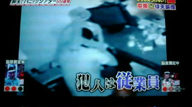

数日前、テレビで仰天映像99連発という番組をやっていた。面白そうなのでみていると、
中国の麻雀店を舞台にした映像が出てきた。
内部
この店に元従業員が泥棒に入り、小銭や買い置きのタバコなどを盗んだ。
元従業員だけに防犯カメラのあることを知っている。そこで顔を隠すために、
イスを頭からかぶっていた。しかし知ってる人間が見れば一目瞭然、直ちに逮捕。

経営者の女性、いわく。
解説に出てこなかったので、中国のどこの街の話なのか、まったくわからない。
お笑い泥棒の話はオモシロかったが、まったく別のことが気になった。ナレーションでは
麻雀荘での出来事なんて解説していた。しかし中国に営業雀荘なんかあるのか...？
たしかに店内の映像として自動卓が１セット写っていたが、まさか１卓で営業しているわけ
はないだろう。
店名が大三元で麻雀卓がある以上、麻雀に関係あることは間違いない。しかしその横
に棋牌堂とある。たしか棋牌はチェスの意味もある（筈）。そこで、ひょっとすると これは麻
雀用品をメインとしてゲーム用品全般を販売する店じゃないのかと思った。誰か中国情報
に詳しい人、教えてちゃぶだい(^-^；
|